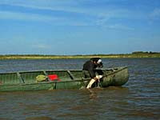
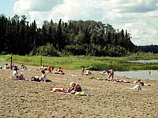
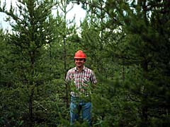
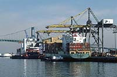

Opportunities
Direct Employment
Indirect Employment
Economic Impact

Saskatchewan forests cover about 54 percent of the province. All people in Saskatchewan have enjoyed the benefits of the forests either directly or indirectly. For example, the First Nations of Saskatchewan have survived for thousands of years on the bounty of these forests. |

Although the forest industry now employs many Aboriginal people, their subsistence lifestyle and culture are still based on a healthy forest environment. |
The forest and the natural environment is recognized as their spiritual mother and areas of traditional land use are intrinsic to their culture and well-being. Such areas include those used for collecting medicinal plants, for hunting and fishing, and for spiritual ceremonies. |
 Aboriginal people supplement this lifestyle by such economic activities as trapping, commercial fishing, wild rice harvesting, berry and mushroom picking, guiding and outfitting. |
 Non-Aboriginal people also use the forest for economic gain by trapping, commercial fishing, guiding and outfitting, and collecting forest products. |
Forests offer a wide range of employment opportunities, primarily through timber harvesting and wood processing. Forestry is Saskatchewan's second largest manufacturing industry. Over 10,000 people in Saskatchewan are employed either directly or indirectly by forest industries. |
 In the forest industry, direct employment includes all people directly employed in logging and processing plants for both primary and secondary forest industries. Examples of people directly employed by the industry include professionals such as foresters, pilots, surveyors, cartographers, marketing analysts, economists, planners, administrators, engineers and research scientists. Forestry also employs truck drivers, mechanics, heavy equipment operators and mill workers. |
 Indirect employment includes all people employed as a result of forest industry activity, such as sales personnel in local retail outlets, people who supply the forestry complex with intermediate goods, and government employees required to maintain community services. Export-oriented manufacturing activities result in indirect employment. |
Contribution to Saskatchewan's Economy
In Saskatchewan, one job in 35 is directly or indirectly dependent on the forest industry. |
The forest environment also provides other employment opportunities through tourism, recreation and related activities. |
The forestry industry contributes about $276 million annually to the provincial economy. There are 230 primary wood-using and 131 secondary manufacturing companies in the province. This newly created wealth from the industry contributes significantly to the standard of living enjoyed by all Saskatchewan residents. |
Saskatchewan's commitment to the development and implementation of sound forest management ensures continued economic benefits to the people of this province. |